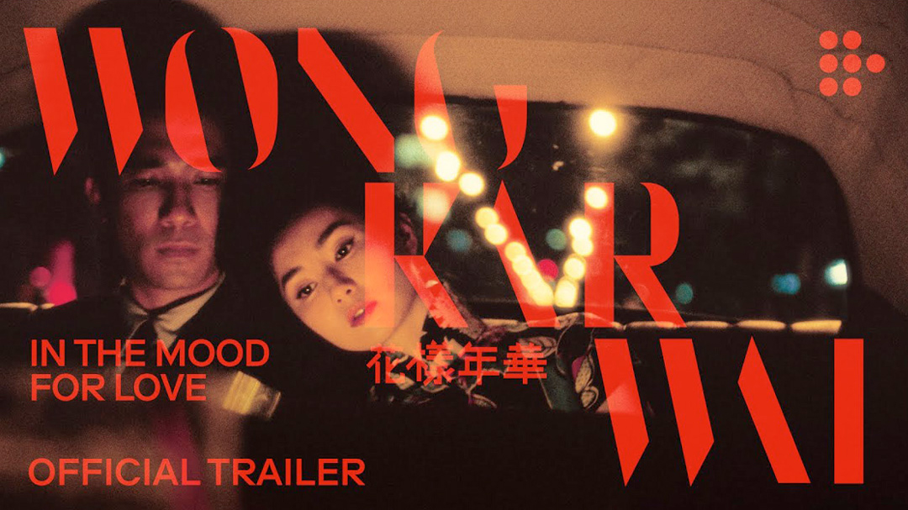

Trailer
Ofiicial Trailer
To mark the 20th anniversary of IN THE MOOD FOR LOVE, Block 2 Distribution has released a commemorative trailer of the Wong Kar Wai classic.
-

- Official Trailer | 20th Anniversary Restoration
- IN THE MOOD FOR LOVE celebrates its 20th anniversary with a stunning new restoration. Streaming exclusively in Latin America, Turkey & Scandinavia, plus select cinemas in Mexico and Colombia, as part of “In Love. The Cinema of Wong Kar Wai”
-

- In the Mood for Love (2000) ORIGINAL TRAILER
- Directed by Kar-Wai Wong and starring Tony Chiu-Wai Leung, Maggie Cheung and Ping Lam Siu.
-

- In The Mood For Love - Yumeji's Theme
- In The Mood For Love directed by Wong Kar-wai Music: Yumeji's Theme (Extended Version) by Shigeru Umebayashi Original Motion Picture
-

- In The Mood For Love 4K | Official Trailer (English)
- To mark the 20th anniversary of IN THE MOOD FOR LOVE, Block 2 Distribution has released a commemorative trailer of the Wong Kar Wai classic.
Music
The title track "Hua Yang De Nian Hua" is a song by famous
singer 'Zhou Xuan' from the Solitary Island period.
The
1946 song is a paean to a happy past and an oblique metaphor for
the darkness of Japanese-occupied Shanghai.
Wong also set
the song to his 2000 short film, named Hua Yang De Nian Hua,
after the track.
Umebayashi Shigeru’s sad waltz
‘Yumeji’s Theme’ is a short, hypnotic string
arrangement that sounds both beautiful and unsettling, thanks
to the harrowing isolated violin melody at the song’s core.
Surprisingly, the first time it comes up in the film, it feels
out of place, almost contrapuntal to the images on-screen.
After all, Umebiyashi originally composed ‘Yumeji’s Theme’ for
Suzuki Seijun’s 1991 feature, YUMEJI. On top of that, the
haunting aura that the song emanates feels strange and
unwarranted.